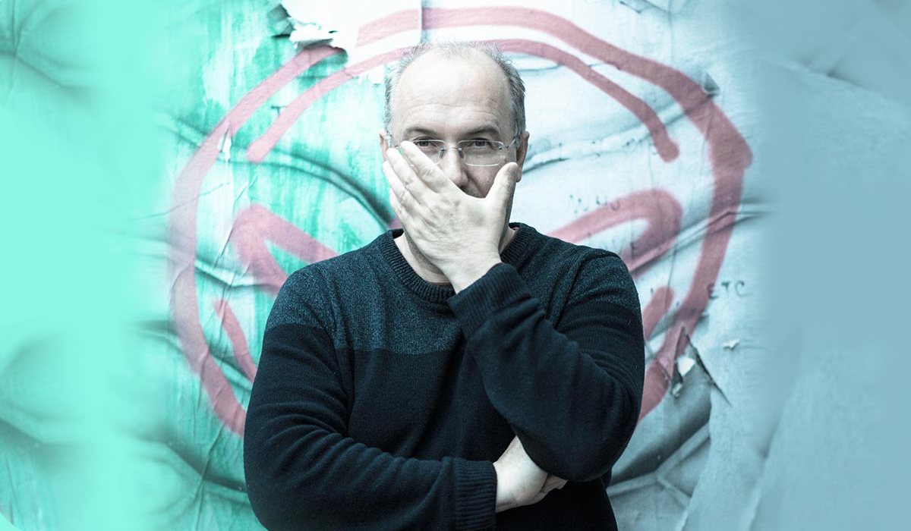

Né à Lyon en 1969, Alain Damasio caracole sur les cimes de l’imaginaire depuis la parution en 2004 de son deuxième roman, La Horde du contrevent, Grand Prix de l’Imaginaire. Il explique sa prédilection pour les récits polyphoniques, et pour le travail physique, physiologique de la langue, par un besoin vital d’habiter plusieurs corps, et de se laisser lui-même habiter. Après la réédition par la Volte en 2007 de La Zone du Dehors (Cylibris, 2001), récit d’anticipation inspiré par Michel Foucault, et un recueil de nouvelles, Aucun souvenir assez solide, Alain Damasio publie à La Volte son roman Les Furtifs, qui réunit ses préoccupations politiques, son inventivité de langage et ses innovations typographiques.
Amplement salué par la critique, dévoré par le public, Alain Damasio construit une œuvre rare, sans équivalent dans les littératures de l’imaginaire. Bienvenue au cœur d’un cyclone !
La Horde du Contrevent a reçu le Grand Prix de l’Imaginaire 2006 et le prix Imaginales des Lycéens 2006. La Zone du Dehors a reçu le Prix Européen Utopiales 2007.
Serf-made-man ? Ou la créativité discutable de Nolan Peskine a reçu le Grand Prix de l’Imaginaire 2018 dans la catégorie meilleure nouvelle. (À lire dans le recueil Au bal des actifs).
Les Furtifs a été élu Meilleur Livre 2019 par le magazine Lire, a reçu le prix Libr’à Nous 2020 dans la catégorie Imaginaire et a reçu le Grand Prix de l’Imaginaire 2020.